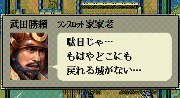

int カスタム::On_カスタム条件(string 条件名, カスタム条件パラメタ型 パラメタ) {
if ( 条件名 == "AND条件::戦争::退却可否" ) {
}
// 変更しない場合-1
return -1;
}

int カスタム::On_カスタム条件(string 条件名, カスタム条件パラメタ型 パラメタ) {
if ( 条件名=="AND条件::戦争::退却可否" ) {
// いつも退却できない。
return false;
}
// それ以外は条件を変えない。
return -1;
}
しかし、元来退却が出来ない時とは、「退却出来る城がない」時だけですから、
上記のままでは、退却できない理由が可笑しくなります。
一般的には、次のような「退却出来ない条件」と「退却出来ない理由へのメッセージ置換」のセットを作成することとなるでしょう。
int 退却できない理由=0;
enum { 城内で退却できない=1, 野戦中央の川で退却できない=2 };
string カスタム::On_噴出メッセージ直前(string 武将名, string 元メッセージ, メッセージ関連情報型 メッセージ関連情報) {
// 戻れる城が無いのが原因というのを別原因にメッセ―を変える。
if ( Is_文字列マッチ(元メッセージ, "もはやどこにも\x0A戻れる城がない") ) {
int iBushouID = メッセージ関連情報.第１人称【武将番号】-1;
if ( 0 <= iBushouID && iBushouID < 最大数::武将情報::配列数 ) {
if ( 退却できない理由==城内で退却できない ) {
int iCastleID = Get_攻城戦中の城番号()-1;
if ( 0 <= iCastleID && iCastleID < 最大数::城情報::配列数 ) {
退却できない理由 = 0; // 理由を使ったので理由リセット。
return "まずは\x0A"+Get_城名(iCastleID) + Get_城称(iCastleID)+"の外へ\x0A出るのじゃ";
}
} else if ( 退却できない理由==野戦中央の川で退却できない ) {
退却できない理由 = 0; // 理由を使ったので理由リセット。
return "ここは戦場のど真ん中\x0Aしかも川中ぞ\x0Aまずは移動じゃ！";
}
}
}
// 変更しない場合""
return "";
}
int カスタム::On_カスタム条件(string 条件名, カスタム条件パラメタ型 パラメタ) {
/*
* 城内に居たら退却できない。
* 野戦で画面中央で「川」の中に居たら退却できない。
*/
if ( 条件名=="AND条件::戦争::退却可否" ) {
// 退却を試みた、武将番号が入る。
int iBushouID = パラメタ.整数1 - 1;
if ( 0 <= iBushouID && iBushouID < 最大数::武将情報::配列数 ) {
// 攻城戦の画面では一切退却できなくする。
if ( Is_攻城戦中() ) {
退却できない理由 = 城内で退却できない;
return false;
// 野戦の時は、画面のある程度中央で、川の中だと無理
} else if ( Is_野戦中() ) {
ヘックス位置型 pos = Get_武将の野戦ヘックス位置(iBushouID);
int iHexRole = Get_野戦ヘックス役割(pos);
if ( iHexRole == 野戦ヘックス役割::川 ) {
ヘックス位置型 center( 野戦ヘックス::中心Ｘ, 野戦ヘックス::中心Ｙ );
if ( Get_ヘックス間隔( pos, center ) <= 8 ) { // ほぼ画面の中央
退却できない理由 = 野戦中央の川で退却できない;
return false;
}
}
}
}
}
// 変更しない場合-1
return -1;
}